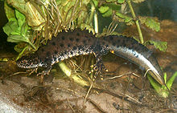
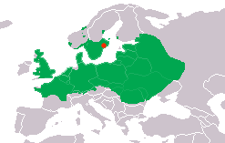

The crested newt is an amphibian that is red listed in Sweden. It usually becomes 10-16 cm long. They live most of the year on land, in forests and in wet meadows. It prefers to have plenty of dead woods and leaves where it can find food and hiding places. Stone rocks, blocks and caves contribute good wintering sites. The eggs are laid in April and May in smaller stagnant collections of that are free from fish. Like most other amphibians, the fry lives in the water and breathes with gills. After three to four months they develop bones and lungs, and walk on land. It is important that the water collections do not dry out before the fry has become so large that they can leave the water.
The crested newt is threatened by regrowth around the natural water collections, and the thickening and implantation of fish and crayfish. It has disappeared from many places where it previously existed in Sweden.
1. Species XY
2. Habitat (water ponds)
3. KNAS-Swedish land cover class data
Is available and open source code for public.

4. Digital Elevation Model (DEM)
Comprise a valuable source of elevation information data required for many engineering applications. In this case, it represents the possibilities of species migration in terrain’s surfaces. The source of data can be extracted from Google Earth TMImagery.
5. DSM Roads
6. Climate variables (temperate and precipitation)
7. Combined maps
If the five mapping data are combined, the optimal solution for urbanization in 2050 can be mapped. Native resolution data are organized in array values which available as TIFF extension files. The authors believe that this technique is promising to increase the awareness for next generation. The user-friendly interface android application is also expected to be built and it can be implemented to other species.